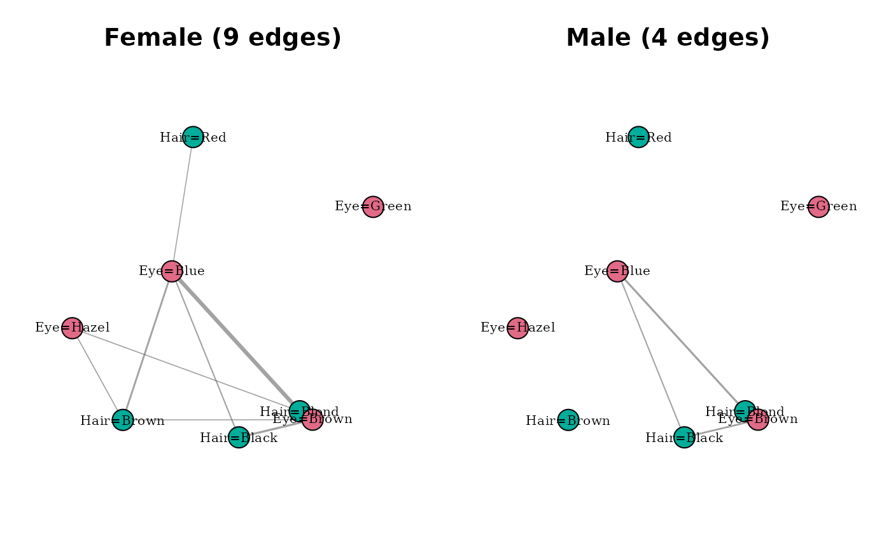

Compare multiple modality networks on one panel
Source:R/compare_modality_graphs.R
compare_modality_graphs.RdVisualises two or more catmodgraph objects side-by-side with a
shared node layout, for exploring how category-level marginal association
structure differs across populations, sites, or time points.
Usage
compare_modality_graphs(
x,
restrict = c("common", "union"),
pruning = c("individual", "none"),
min_weight = 0.1,
max_p = 0.05,
signed = FALSE,
layout_fn = igraph::layout_with_fr,
vertex_size = 14,
edge_scale = 6,
...
)Arguments
- x
A named list of
catmodgraphobjects. The list names become panel titles. A minimum of two graphs is required.- restrict
Character. How to handle modalities that appear in only some of the input graphs. One of:
"common"(default)Restrict every panel to modalities present in all input graphs. Safest for comparison.
"union"Use the union of modalities across all inputs. Modalities absent from a given graph appear as isolated vertices in that panel.
- pruning
Character. How to filter edges before plotting. One of
"individual"(default),"none". Pooled pruning is not supported for modality networks because it requires pooling the underlying row data and re-estimating, which may change the modality set non-trivially. Use"individual"with a sharedmin_weightto ensure comparable per-panel thresholds.- min_weight
Numeric. Minimum phi threshold for
"individual"pruning. Default0.10.- max_p
Numeric. Maximum p-value for
"individual"pruning. Default0.05.- signed
Logical. If
TRUE, edges are coloured by sign of the storedstd_residattribute (green = attraction, red = repulsion). DefaultFALSE.- layout_fn
Function. An igraph layout function applied to the union graph. Default
igraph::layout_with_fr.- vertex_size
Numeric. Vertex size. Default
14.- edge_scale
Numeric. Multiplier for edge widths. Default
6.- ...
Further arguments passed to
plot.igraph.
Details
Modality graphs are inherently harder to compare than variable-level
graphs because modality sets may differ across groups (e.g., a
response category endorsed in population A but not population B).
The restrict = "common" default avoids this by reducing all
panels to a shared vocabulary; "union" preserves all nodes
but panels will differ in vertex presence.
Formal testing
For inferential comparison of modality networks, see
test_modality_graph_equality (omnibus) and
test_modality_edge_differences (edge-wise post-hoc).
Examples
# Build two modality graphs from subsets of HairEyeColor
df <- expand_table(HairEyeColor)
mg_f <- build_modality_graph(df[df$Sex == "Female", c("Hair", "Eye")])
mg_m <- build_modality_graph(df[df$Sex == "Male", c("Hair", "Eye")])
compare_modality_graphs(list(Female = mg_f, Male = mg_m))
